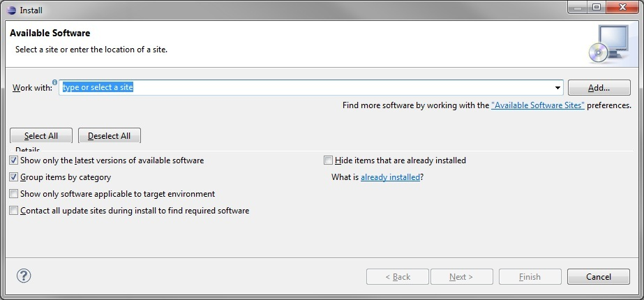
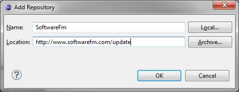
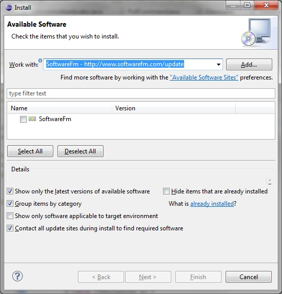
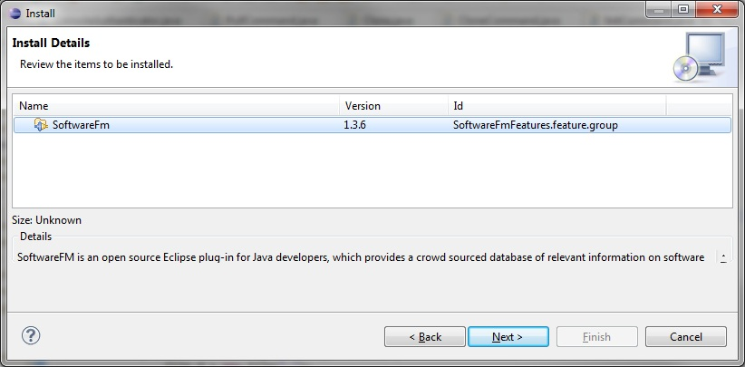
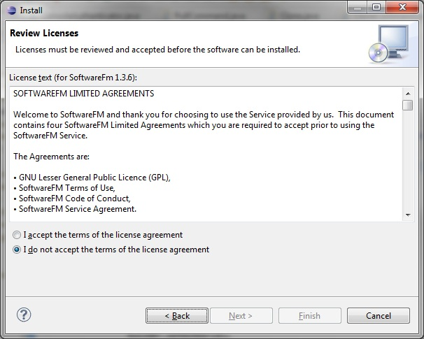
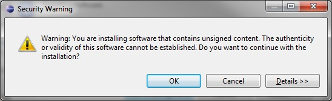
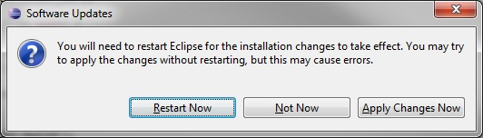
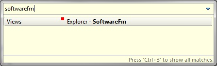

When in Eclipse select Help > Install New Software from the main menu bar. The install dialog will appear.

Click "Add" and type in the name and update site for SoftwareFm, as in the following figure.

Click OK, and the following dialog box will appear. Click Next. This may take some time as Eclipse seems to check every update site it knows about at this moment

Select the checkbox to the left of SoftwareFm and Click Next.

Click Next.

Click the radio button next to "I accept the terms of the license agreement". Click Finish.
After Eclipse goes through the process of updating itself (which may take a few moments), you will see the following dialog.

Click OK, then wait for Eclipse to display the following:

Click Restart Now and wait for Eclipse to restart the workbench. Congratulations, SoftwareFm is now installed!
To see the plugin type Ctrl3, followed by "softwarefm", then press the Enter key
